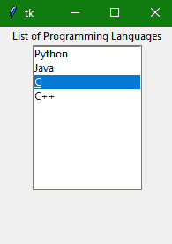

Tkinter Listbox小部件
在本教程中，我们将介绍 Python 中的 Tkinter Listbox 小部件，该小部件用于在一个框内以列表的形式向用户显示不同类型的项目，用户可以选择这些项目。
项目包含同类型字体和同字体颜色。
这里需要注意的是只有文本项可以放在列表框小部件中。
从这个项目列表中，用户可以根据需要选择一个或多个项目。
Tkinter Listbox Widget
Tkinter Listbox 小部件的语法如下所示:
W = Listbox(master, options)
在上面的语法中，master参数表示父窗口。您可以使用许多options来更改列表框的外观，这些选项被写成逗号分隔的键值对。
Tkinter Listbox Widget 选项:
下面是列表框小部件使用的各种选项:
| 期权名称 | 描述 |
|---|---|
bg |
该选项指示小部件的背景颜色。 |
bd |
该选项用于表示边框的大小。默认值为 2 像素。 |
cursor |
借助该选项，鼠标指针看起来会像点、箭头等光标类型一样。 |
font |
该选项指示列表框项目的字体类型。 |
fg |
该选项指示文本的颜色。 |
height |
该选项用于表示列表框中显示的行的计数。该选项的默认值为 10。 |
highlightcolor |
当窗口小部件处于焦点下时，该选项用于指示列表框项目的颜色。 |
highlightthickness |
该选项用于指示高光的厚度。 |
relief |
此选项指示边框的类型。默认值为凹陷。 |
selectbackground |
该选项用于指示背景颜色，该颜色用于显示所选文本。 |
selectmode |
此选项用于确定可从列表中选择的项目数量。可以设置为浏览、单个、多个、扩展。 |
width |
该选项用于以字符表示小部件的宽度。 |
xscrollcommand |
该选项用于让用户水平滚动列表框。 |
yscrollcommand |
该选项用于让用户垂直滚动列表框。 |
Tkinter 列表框小部件方法:
以下是与列表框小部件相关联的方法:
| 方法 | 描述 |
|---|---|
activate(index) |
此方法主要用于选择指定索引处的行。 |
curselection() |
此方法用于返回包含所选元素行号的元组，从 0 开始计数。如果未选择任何内容，则返回一个空元组。 |
delete(first, last = None) |
此方法用于删除给定范围内存在的行。 |
get(first, last = None) |
此方法用于获取给定范围内存在的项目列表。 |
index(i) |
此方法用于将带有指定索引的行放在小部件的顶部。 |
insert(index, *elements) |
此方法用于在指定索引之前插入具有指定元素数的新行。 |
nearest(y) |
此方法用于返回列表框小部件 y 坐标的最近行的索引。 |
see(index) |
此方法用于调整列表框的位置，使索引指定的行可见。 |
size() |
此方法返回列表框小部件中的行数。 |
xview() |
此方法用于使小部件水平滚动。 |
xview_moveto(fraction) |
此方法用于使列表框水平滚动列表框中最长线条宽度的一部分。 |
xview_scroll(number, what) |
此方法用于使列表框水平滚动指定的字符数。 |
yview() |
此方法允许列表框垂直滚动。 |
yview_moveto(fraction) |
此方法用于使列表框垂直滚动列表框中最长线条宽度的一部分。 |
yview_scroll (number, what) |
此方法用于使列表框垂直滚动指定的字符数。 |
Tkinter 列表框小部件示例
下面我们有一个使用这个小部件的基本例子:
from tkinter import *
top = Tk()
top.geometry("200x250")
lbl = Label(top, text="List of Programming Languages")
listbox = Listbox(top)
listbox.insert(1,"Python")
listbox.insert(2, "Java")
listbox.insert(3, "C")
listbox.insert(4, "C++")
lbl.pack()
listbox.pack()
top.mainloop()

在上面的代码示例中，我们创建了一个简单的 Listbox 小部件，其中包含一些项目，并指定了列表框小部件上的顶部列表项目(标题)。
总结:
在本教程中，我们了解了 Tkinter Listbox 小部件、其基本语法、Listbox 小部件的常用方法以及一个代码示例。